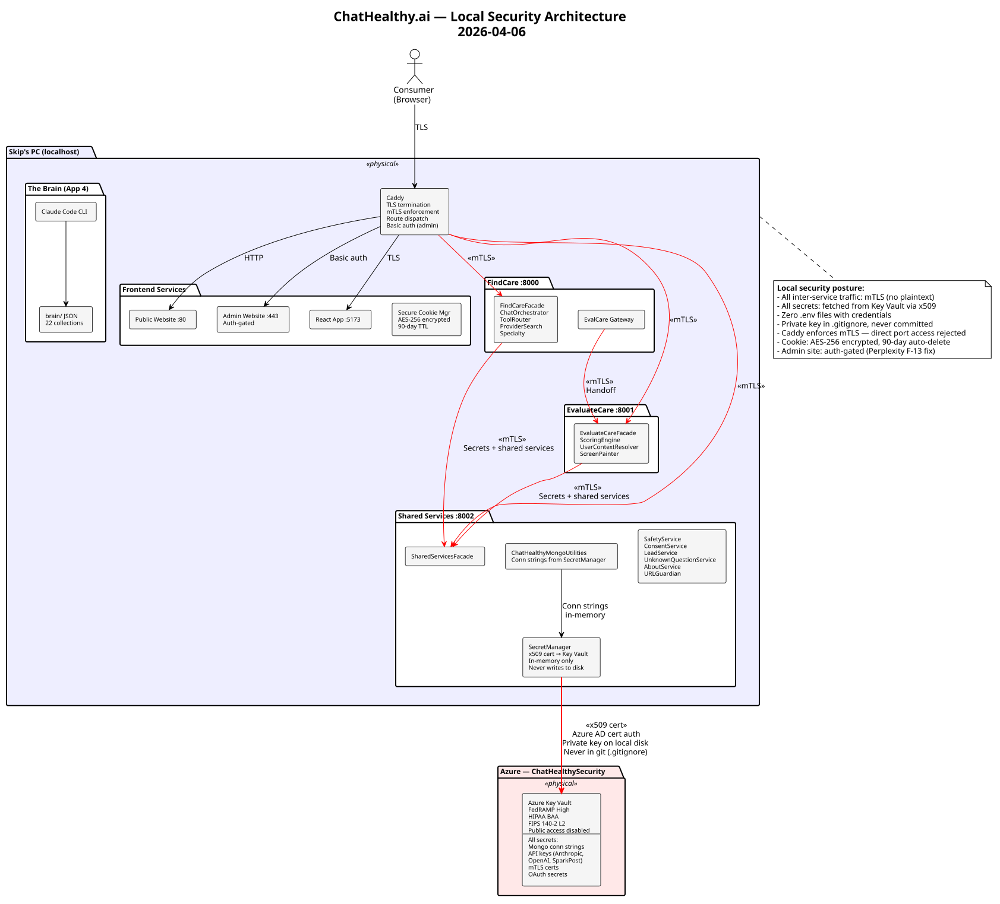
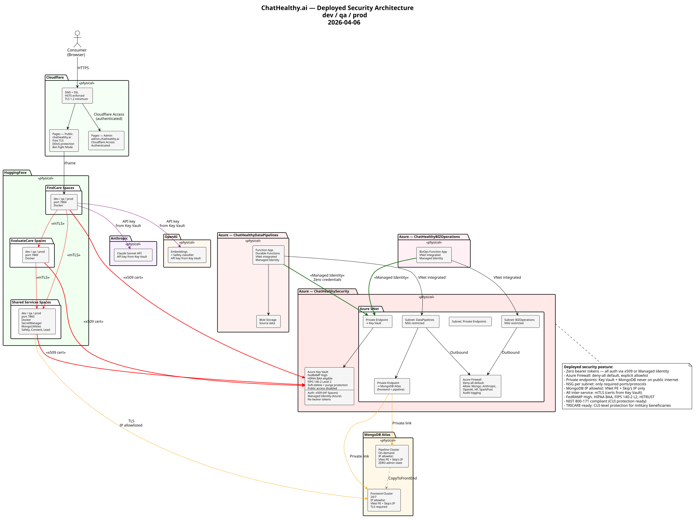

Security Architecture
1. Local Security Architecture

The local development environment mirrors production security boundaries. All inter-service communication uses mutual TLS — Caddy acts as the single entry point, terminating TLS for consumers and enforcing mTLS for service-to-service traffic. No service binds directly to a consumer-accessible port without Caddy mediation.
Three backend services (FindCare :8000, EvaluateCare :8001, Shared Services :8002) communicate exclusively through mTLS-authenticated channels. The SecretManager component in Shared Services authenticates to Azure Key Vault using an x509 certificate registered with Azure AD. The private key resides on local disk in a directory excluded from git. At startup, SecretManager fetches all credentials (MongoDB connection strings, API keys, mTLS certificates) from Key Vault and serves them to FindCare and EvaluateCare over mTLS. No service holds API keys or connection strings in its own configuration, environment variables, or code.
The encrypted secure cookie (AES-256, HttpOnly, Secure, SameSite=Strict) tracks visit frequency and query patterns with a 90-day auto-delete TTL. The admin website is gated behind basic authentication locally, addressing Perplexity audit finding F-13 (architecture docs publicly accessible).
Local Security Controls
- mTLS on all inter-service communication
- x509 certificate authentication to Key Vault (no bearer tokens)
- Private key never in git (.gitignore enforced)
- SecretManager: in-memory only, never writes secrets to disk or logs
- Caddy rejects direct port access — all traffic through proxy
- Admin site auth-gated (Perplexity F-13 fix)
- Cookie: AES-256 encrypted, HttpOnly, Secure, SameSite=Strict, 90-day TTL
- DR-009: zombie process cleanup before port binding
2. Deployed Security Architecture

The deployed architecture eliminates all bearer tokens from the credential chain. HuggingFace Spaces (9 spaces: 3 services × 3 environments) authenticate to Azure Key Vault using x509 certificates registered with Azure AD — each Space holds one certificate (the private key in HF Secrets) instead of six API keys. Azure Functions authenticate to Key Vault via Managed Identity, which requires zero credentials — Azure handles authentication internally through the instance metadata service. This is the most secure authentication mechanism available on Azure.
Azure Key Vault is FedRAMP High authorized, HIPAA BAA eligible, and uses FIPS 140-2 Level 2 validated HSMs for key storage. Public access to Key Vault is disabled — access is restricted to Azure VNet private endpoints and authorized x509 certificate holders.
The Azure VNet provides network isolation with separate subnets for DataPipelines, BIZOperations, and private endpoints. An Azure Firewall enforces deny-all default egress, allowing only explicitly listed destinations (MongoDB Atlas, Anthropic, OpenAI, HuggingFace, SparkPost). All firewall traffic is logged for audit. MongoDB Atlas clusters are accessible only via Azure Private Endpoints and Skip’s static IP — no public internet exposure.
Cloudflare provides TLS termination, HSTS, DDoS protection, and Cloudflare Access for the admin site. All inter-service traffic between HuggingFace Spaces uses mTLS with certificates fetched from Key Vault at startup.
Deployed Security Controls
- Zero bearer tokens — all auth via x509 cert or Managed Identity
- Azure Key Vault: FedRAMP High, HIPAA BAA, FIPS 140-2 Level 2
- Key Vault public access disabled — private endpoint only for Azure resources
- Azure Firewall: deny-all default, explicit allowlist, audit logging
- VNet subnet isolation with NSG per subnet
- Private endpoints: Key Vault and MongoDB Atlas never on public internet
- MongoDB IP allowlist: VNet private endpoint + Skip’s IP only
- Cloudflare: TLS 1.2 minimum, HSTS, Bot Fight Mode, DDoS protection
- Cloudflare Access: admin site authenticated
- mTLS between all HuggingFace Spaces
- Managed Identity for Azure Functions (zero credentials)
- HF Spaces: one x509 cert per Space instead of six API keys
3. NIST SP 800-171 Compliance
NIST SP 800-171 Rev 2 defines the security requirements for protecting Controlled Unclassified Information (CUI) in nonfederal systems. Compliance is required under DFARS 252.204-7012 for DoD contractors and covers TRICARE health data for military beneficiaries. The following controls are satisfied by this architecture.
3.1 Access Control
| Control | Requirement | How Satisfied |
|---|---|---|
| 3.1.1 | Limit system access to authorized users | mTLS client certificates restrict service-to-service access. Key Vault access policies limit secret retrieval to registered certificates and Managed Identities. |
| 3.1.2 | Limit system access to authorized transactions and functions | ToolRouter allowlist restricts tool execution (F-05 fix). SharedServicesFacade exposes only defined methods. |
| 3.1.3 | Control the flow of CUI | Azure Firewall deny-all default with explicit allowlist. Private endpoints prevent CUI from traversing public internet. MongoDB IP allowlist. |
| 3.1.13 | Employ cryptographic mechanisms to protect confidentiality of remote access | mTLS on all inter-service. TLS 1.2 minimum on Cloudflare. x509 cert auth to Key Vault. |
3.5 Identification and Authentication
| Control | Requirement | How Satisfied |
|---|---|---|
| 3.5.1 | Identify system users, processes, and devices | x509 certificates identify each service. Managed Identity identifies Azure Functions. CAC/PKI identifies TRICARE beneficiaries (future). |
| 3.5.2 | Authenticate users, processes, and devices | mTLS mutual authentication. x509 cert auth to Azure AD. Managed Identity for Azure Functions. OAuth 2.0 with PKCE for end users. |
| 3.5.3 | Use multifactor authentication | Cloudflare MFA enforced. OAuth social login inherits provider MFA. CAC/PKI: hardware token + PIN (inherent MFA). |
| 3.5.10 | Store and transmit only cryptographically-protected passwords | No passwords in the system. All auth is certificate-based or Managed Identity. API keys in Key Vault (FIPS 140-2 L2 HSM), transmitted only over mTLS. |
3.13 System and Communications Protection
| Control | Requirement | How Satisfied |
|---|---|---|
| 3.13.1 | Monitor, control, and protect communications at external boundaries | Azure Firewall at VNet boundary. Cloudflare WAF at public boundary. mTLS at service boundary. |
| 3.13.5 | Implement subnetworks for publicly accessible components | Azure VNet with separate subnets for DataPipelines, BIZOperations, and Private Endpoints. NSG per subnet. |
| 3.13.8 | Implement cryptographic mechanisms to prevent unauthorized disclosure during transmission | mTLS on all inter-service traffic. TLS 1.2 minimum. x509 cert auth — private keys never transmitted. |
| 3.13.11 | Employ FIPS-validated cryptography | Azure Key Vault uses FIPS 140-2 Level 2 validated HSMs. AES-256 for cookie encryption. |
4. HITRUST CSF v11 Compliance
HITRUST CSF is the gold standard security framework for health technology. It maps to HIPAA, NIST, and ISO 27001 and is required by healthcare enterprise buyers. The following domains are satisfied by this architecture.
01 — Information Security Management Program
01.a Information Security Management Program
The Brain (App 4) functions as the ISMS — governance policies (GOV-001 through GOV-014), operating rules (v4-001 through v4-020), risk acceptance register, external audit registry, and continuous improvement KPIs.
05 — Access Control
05.a Business requirement for access control
Zero-trust: all services authenticate via mTLS. Key Vault access requires x509 cert or Managed Identity. MongoDB requires VNet PE or IP allowlist.
05.d Password management
No passwords in system. Certificate-based auth eliminates password lifecycle entirely.
05.i Policy on use of network services
Azure Firewall deny-all default. NSG per subnet. Only explicitly allowed destinations.
06 — Cryptography
06.d Cryptographic controls
mTLS (TLS 1.2+), AES-256 cookie encryption, FIPS 140-2 L2 HSM in Key Vault, x509 certificate auth. No custom cryptography — all industry-standard.
06.f Key management
Azure Key Vault is the single key management system. Certificate rotation via dual-cert acceptance window. Secrets cached in-memory with TTL. Keys never on disk except local dev private key (.gitignore).
09 — Communications and Operations Management
09.m Network controls
Azure VNet with subnets, NSGs, firewall. Private endpoints for Key Vault and MongoDB. Cloudflare DDoS and WAF for public surface.
09.ab Monitoring system use
Azure Firewall audit logs. Key Vault access logs. MongoDB audit. Application Insights. Safety system audit trail.
10 — Information Systems Acquisition, Development, and Maintenance
10.a Security requirements analysis and specification
EPIC-4 Security with 8 features, 27 stories, 70+ boolean testable requirements. Perplexity external audits. GOV-007 engineering rules as binding standards.
10.f Technical review after platform changes
Three-environment promotion (dev, qa, prod). QA gate requires GPT sign-off. Production requires Boss sign-off (GOV-007). Full regression after every architecture change.
5. TRICARE Readiness
This architecture supports CUI-level protection sufficient for TRICARE military beneficiary health data. TRICARE data is Controlled Unclassified Information (CUI), not classified. FedRAMP High + NIST 800-171 is the prescribed protection standard for CUI.
Architecture Supports
- CAC/PKI authentication via x509 (same mechanism as service auth)
- In-memory only processing of soldier identity — never persisted to disk
- FIPS 140-2 Level 2 cryptography via Key Vault HSM
- DFARS 252.204-7012 compliance via NIST 800-171 control satisfaction
- FedRAMP High authorization of all Azure components
Requires Before Deployment
- Formal ATO (Authority to Operate) from Defense Health Agency
- Legal review by DoD healthcare contracts attorney
- Potential upgrade to Azure Government (IL4) depending on DHA assessment